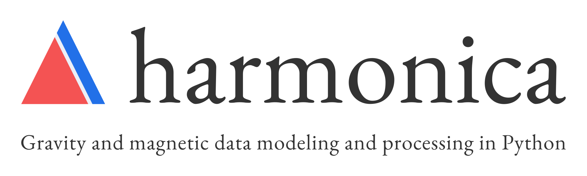

¶
This software is in the early stages of design and implementation
This means that will occasionally make backwards incompatible changes as we try to improve the software, test new ideas, and settle on the project scope. We welcome any feedback and ideas! Let us know by submitting issues on Github or send us a message on our Slack chatroom.
See also
Harmonica is a part of the Fatiando a Terra project.
About¶
Harmonica is a Python library for processing and modeling gravity and magnetic data. It includes common processing steps, like calculation of Bouguer and terrain corrections, reduction to the pole, upward continuation, equivalent sources, and more. There are forward modeling functions for basic geometric shapes, like spheres, prisms, polygonal prisms, and tesseroids. The inversion methods are implemented as classes with an interface inspired by scikit-learn (like Verde).
Project goals¶
These are the long-term goals for Harmonica:
Efficient, well designed, and fully tested code for gravity and magnetic data.
Cover the entire data life-cycle: from raw data to 3D Earth model.
Focus on best-practices to discourage misuse of methods, particularly inversion.
Easily extended code to enable research on the development of new methods.
See the Github milestones for short-term goals.
Things that will not be covered in Harmonica:
Contacting Us¶
Most discussion happens on Github. Feel free to open an issue or comment on any open issue or pull request.
We have chat room on Slack where you can ask questions and leave comments.
Contributing¶
Code of conduct¶
Please note that this project is released with a Contributor Code of Conduct. By participating in this project you agree to abide by its terms.
Contributing Guidelines¶
Please read our Contributing Guide to see how you can help and give feedback.
Imposter syndrome disclaimer¶
We want your help. No, really.
There may be a little voice inside your head that is telling you that you’re not ready to be an open source contributor; that your skills aren’t nearly good enough to contribute. What could you possibly offer?
We assure you that the little voice in your head is wrong.
Being a contributor doesn’t just mean writing code. Equally important contributions include: writing or proof-reading documentation, suggesting or implementing tests, or even giving feedback about the project (including giving feedback about the contribution process). If you’re coming to the project with fresh eyes, you might see the errors and assumptions that seasoned contributors have glossed over. If you can write any code at all, you can contribute code to open source. We are constantly trying out new skills, making mistakes, and learning from those mistakes. That’s how we all improve and we are happy to help others learn.
This disclaimer was adapted from the MetPy project.
License¶
This is free software: you can redistribute it and/or modify it under the terms of the BSD 3-clause License. A copy of this license is provided in LICENSE.txt.